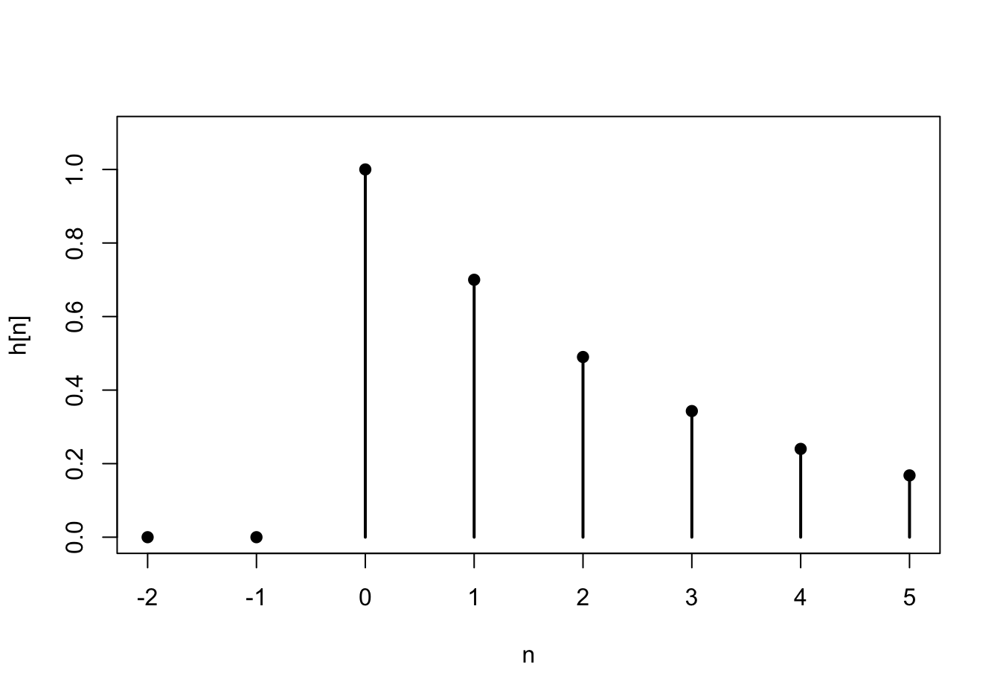

Lesson 57 LTI Filters in the Time Domain
Motivation
What happens when we pass a stationary random signal \(\{ X(t) \}\) into a filter \(\mathcal{L}\)? This lesson studies the properties of the output signal \(\{ Y(t) \}\), which is also a random process.
Figure 57.1: Filtering a Signal
Review
We begin this lesson by recalling a few basic facts about linear time-invariant filters. This material can be found in any signals and systems textbook.
In general, a filter can do anything to a signal. We will restrict our attention to a specific class of filters called linear time-invariant (or LTI, for short) filters. An LTI filter satisfies the following properties:
- linearity: \(\mathcal{L}[a_1x_1 + a_2x_2] = a_1\mathcal{L}[x_1] + a_2\mathcal{L}[x_2]\) for any constants \(a_1, a_2\) and signals \(x_1, x_2\).
- time-invariance: \(\mathcal{L}[x(t - \tau)](t) = \mathcal{L}[x](t - \tau)\) for any shift \(\tau\). In other words, if the input signal \(x(t)\) is delayed by \(\tau\) seconds, then the output signal \(y(t)\) is also delayed by \(\tau\) seconds, without any other modifications.
Theorem 57.1 (Impulse Response) Let \(h(t)\) denote the impulse response of an LTI filter \(\mathcal{L}\). That is, \(h \overset{\text{def}}{=} \mathcal{L}[\delta]\) is the output signal when the input signal is an impulse \(\delta(t)\).
Then, \(\mathcal{L}\) acts by convolving \(h\) with the input signal \(x\). That is, \[ y(t) = (h * x)(t). \]Proof. We will prove this result for discrete-time signals, although the proof for continuous-time signals is similar.
First, write \(x = x * \delta\). Any signal convolved with a delta function is itself. This is called the sifting property of the delta function. To see why this is true, write out the definition of convolution: \[ x[n] = \sum_{m=-\infty}^\infty x[m] \delta[n-m]. \] All terms in this sum will be zero, except when \(m=n\), when the term is \(x[n] \delta[0] = x[n]\).
From here, we just apply linearity and time-invariance. \[\begin{align*} y[n] = \mathcal{L}\big[x[n]\big][n] &= \mathcal{L}\Big[\sum_{m=-\infty}^\infty x[m] \delta[n - m]\Big][n] & \text{(sifting property)} \\ &= \sum_{m=-\infty}^\infty x[m] \mathcal{L}\big[\delta[n-m]\big][n] & \text{(linearity)} \\ &= \sum_{m=-\infty}^\infty x[m] h[n-m] & \text{(time-invariance)}. \end{align*}\] This is just the definition of convolution: \(h * x\).Because the impulse response uniquely describes any LTI filter, it is common to redraw Figure 57.1, using \(h\) to symbolize the filter.
Figure 57.2: Linear Time-Invariant Filter, represented by its impulse response \(h\)
Solution. The impulse response \(h[n]\) is defined to be the output signal \(y[n]\) when the input signal \(x[n]\) is the unit impulse \(\delta[n]\). Therefore, we have the relation: \[ h[n] = a_1 h[n-1] + \delta[n] \] for all \(n\).
First, we observe that \(h[n] = 0\) for all \(n < 0\). For \(n \geq 0\), we can calculate \(h[n]\) recursively: \[\begin{align*} h[0] &= a_1 h[-1] + \delta[0] = a_1 \cdot 0 + 1 = 1 \\ h[1] &= a_1 h[0] + \delta[1] = a_1 \cdot 1 + 0 = a_1 \\ h[2] &= a_1 h[1] + \delta[2] = a_1 \cdot a_1 + 0 = a_1^2 \\ h[3] &= a_1 h[2] + \delta[3] = a_1 \cdot a_1^2 + 0 = a_1^3 \\ &\vdots \end{align*}\] At this point, the pattern is hopefully clear. We can write the impulse response as \[ h[n] = \begin{cases} a_1^n & n \geq 0 \\ 0 & n < 0 \end{cases} = a_1^n u[n], \] where \(u[n]\) is the unit step function, defined to be 1 when \(n \geq 0\) and 0 otherwise. This impulse response is graphed below for \(a_1 = 0.7\).
Theory
We are now ready to apply linear filters to stationary random processes.
Theorem 57.2 (Filtering Stationary Processes) Let \(\{ X(t) \}\) be a stationary random process and \(h(t)\) be the impulse response of a linear time-invariant filter. If \(\{ X(t) \}\) is passed into a linear time-invariant filter with impulse response \(h(t)\), then the output process \(\{ Y(t) \}\) is also stationary, with
- mean function \(\mu_Y = \mu_X \cdot \int_{-\infty}^\infty h(t)\,dt\), and
- autocovariance function \(C_Y(\tau) = (h(-\cdot) * h * C_X)(\tau)\).
For discrete-time signals, we have:
- mean function \(\mu_Y = \mu_X \cdot \sum_{k=-\infty}^\infty h[k]\), and
- autocovariance function \(C_Y[k] = (h[-\cdot] * h * C_X)[k]\).
Proof. We will prove the theorem for discrete-time signal, but the proof for continuous-time signals is similar.
The mean function is \[\begin{align*} \mu_Y[n] = E[Y[n]] &= E\left[\sum_{k=-\infty}^\infty h[k] X[n-k] \right] \\ &= \sum_{k=-\infty}^\infty h[k] \underbrace{E[X[n-k]]}_{\mu_X} \\ &= \mu_X \sum_{k=-\infty}^\infty h[k]. \end{align*}\]
The autocovariance function is \[\begin{align*} C_Y[m, n] = \text{Cov}[Y[m], Y[n]] &= \text{Cov}\left[\sum_{k=-\infty}^\infty h[k] X[m-k], \sum_{\ell=-\infty}^\infty h[\ell] X[n - \ell] \right] \\ &= \sum_{k=-\infty}^\infty \sum_{\ell=-\infty}^\infty h[k] h[\ell] \text{Cov}[X[m-k], X[n-\ell]] \\ &= \sum_{\ell=-\infty}^\infty h[\ell] \sum_{k=-\infty}^\infty h[k] C_X[(m-n) + \ell - k] \\ &= \sum_{\ell=-\infty}^\infty h[\ell] (h * C_X)[(m-n) + \ell] \\ &= \sum_{\ell=-\infty}^\infty h[-\ell] (h * C_X)[(m-n) - \ell] \\ &= (h[-n] * h * C_X)[m-n] \end{align*}\]
Since the mean function is constant and the autocovariance function only depends on \(m-n\), \(\{ Y[n]\}\) is also stationary.Example 57.2 (Autoregressive Process) Let \(\{ Z[n] \}\) be white noise, consisting of i.i.d. random variables with mean \(0\) and variance \(\sigma^2\). Then, the process \[ X[n] = a_1 X[n-1] + Z[n] \] is called an autoregressive process (of order 1). We will derive the autocovariance function of \(\{ X[n] \}\) using Theorem 57.2.
Notice that \(\{ X[n] \}\) is the output signal when white noise \(\{ Z[n] \}\) is passed into the LTI filter from Example 57.1. That is, \(\{ X[n] \}\) is the output when a stationary process is passed into a filter with impulse response \[ h[n] = (0.8)^n u[n]. \] Therefore, we know that \(\{ X[n] \}\) is also stationary.
Its mean function is \(\displaystyle \mu_X = \mu_Z \sum_k h[k] = 0\), since we assumed that \(\{ Z[n] \}\) was mean 0.
Its autocovariance function, as a function of the difference \(k=m-n\), is \[ C_X = h[-n] * h * C_Z. \] We calculated the autocovariance function of white noise in Example 52.3: \[ C_Z[k] = \sigma^2 \delta[k]. \] Now, applying the sifting property of the delta function, we see that \[ C_X = h[-n] * h * C_Z = \sigma^2 (h[-n] * h). \] So we just need to convolve the impulse response \(h[n]\) with a time-reversed version \(h[-n]\). \[\begin{align*} (h[-n] * h)[k] &= \sum_{m=-\infty}^\infty h[m] h[-(k-m)] & \text{(definition of convolution)} \\ &= \sum_{m=-\infty}^\infty a_1^{m} u[m] a_1^{m-k} u[m-k] & \text{(definition of $h$)} \\ &= \sum_{m=-\infty}^\infty a_1^{2m-k} u[m] u[m-k] & \text{(combining terms)} \end{align*}\] Notice that the unit step function \(u\) will be zero unless both \(m \geq 0\) and \(m \geq k\). If \(k\) is non-negative, then the second condition implies the first. So \(u[m] u[m-k]\) has the effect of changing the limits of the sum: \[\begin{align*} &= \sum_{m=k}^\infty a_1^{2m-k}; k \geq 0 \\ &= \frac{a_1^k}{1 - a_1^2}; k \geq 0 & \text{(infinite geometric series)} \end{align*}\]
Putting it all together, when \(k\) is non-negative, the autocovariance function of \(\{ X[n] \}\) is \[ C_X[k] = \sigma^2 \frac{a_1^k}{1 - a_1^2}; k \geq 0. \] But covariance is symmetric, so \(C_X[k] = C_X[-k]\). Therefore, we can say in general that \[ C_X[k] = \sigma^2 \frac{a_1^{|k|}}{1 - a_1^2}. \]
This example illustrates the power of Theorem 57.2. Although the derivation of the autocovariance function was quite involved, this derivation is still more straightforward than any of the alternatives.Essential Practice
Find the power spectral density of the autoregressive process, in terms of \(a_1\) and \(\sigma\). (Hint: Use the mean function and autocovariance function that we derived in Example 57.2.) Graph the power spectral density for \(a_1 = 0.8\) and \(\sigma = 2\).
Consider the moving average process \(\{ X[n] \}\) of Example 48.2, defined by \[ X[n] = 0.5 Z[n] + 0.5 Z[n-1], \] where \(\{ Z[n] \}\) is a sequence of i.i.d. standard normal random variables.
Express \(\{ X[n] \}\) as white noise passed through an LTI filter. What is the impulse response of this filter? Then, use Theorem 57.2 to calculate the mean and autocovariance functions of \(\{ X[n] \}\). Check that your answers agree with the ones you obtained in Lessons 50 and 52.